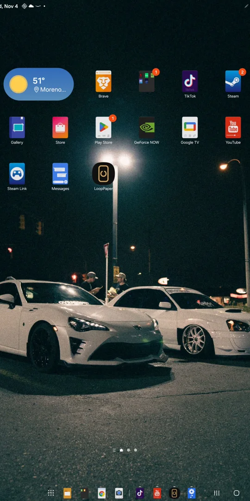

Tus vídeos y fotos como fondo animado para Android.
Elige cualquier vídeo, GIF o foto de tu teléfono y míralo en bucle en tu pantalla de inicio. Crea una lista y tu fondo cambia solo, con 123 transiciones entre uno y otro.
Consíguelo gratis en Google PlaySin anuncios. Sin cuenta. Tus archivos nunca salen de tu teléfono.

Míralo en movimiento
123 transiciones entre tus imágenes


Qué hace
Fondo de vídeo
Cualquier vídeo o GIF de tu teléfono, de cualquier duración. Mira el bucle antes de ponerlo, recórtalo y elige dónde empieza.
Cambiador de fondos
Listas de vídeos, GIF y fotos que cambian solas, con un modo aleatorio que nunca repite.
123 transiciones
Agua, lava, cristal, arena, agujero negro, anime, cómic, retro y más, con física real.
Fotos que cobran vida
La persona o mascota de tu foto respira, parpadea y se inclina hacia tu dedo.
LoopPaper Studio
Da vida a tus propias fotos: cielos en movimiento, agua que fluye, ventanas que se iluminan de noche, auras, efectos anime y cinemagrafías. Haz 3 gratis.
Tu foto como tela
Un estandarte, bandera, tapiz o banderín que se balancea al inclinar el teléfono, o telones de teatro que se abren al desbloquear. Elige seda, terciopelo o lona, y el viento de calma a tormenta.
Un reloj detrás de tu sujeto
Estilos de reloj de gama alta, colocados alrededor o detrás de la persona de tu imagen.
Hecho para plegables
Una lista distinta en la pantalla interior y en la exterior, modo libro y modo mesa.
Cuida la batería
Descansa cuando la pantalla está apagada y puede pausarse en ahorro de batería.
Privado
Sin anuncios, sin cuenta, sin seguimiento. Tus fotos se quedan en tu teléfono.
Preguntas
¿Cómo pongo un vídeo como fondo de pantalla en Android?
Instala LoopPaper, toca Elegir, escoge cualquier vídeo o GIF de tu teléfono, míralo en bucle en la vista previa y toca Poner como fondo. También puedes tocar Compartir en un vídeo de la Galería o Google Fotos y elegir LoopPaper.
¿LoopPaper es gratis?
Sí. Poner cualquier vídeo, GIF o foto como fondo animado es gratis, sin anuncios, sin marca de agua y sin cuenta. LoopPaper Plus es una compra única opcional que desbloquea listas ilimitadas, las 123 transiciones y los efectos extra. La prueba de 7 días solo empieza cuando tocas Empezar prueba y nunca se convierte en una suscripción.
¿Mi fondo puede cambiar automáticamente?
Sí. Crea una lista de vídeos, GIF y fotos y LoopPaper cambia entre ellos solo, con una transición entre uno y otro.
¿Un fondo animado gasta la batería?
LoopPaper descansa cuando la pantalla está apagada y puede pausarse en ahorro de batería, así que solo trabaja mientras lo miras.
¿Se suben mis fotos a algún sitio?
No. Tus archivos se quedan en tu teléfono. LoopPaper nunca los sube, y todo lo que hace con una foto ocurre en el teléfono.